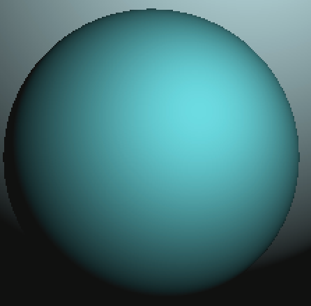
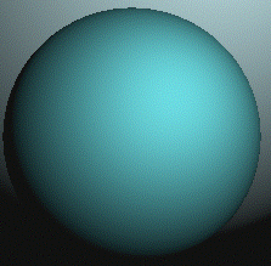
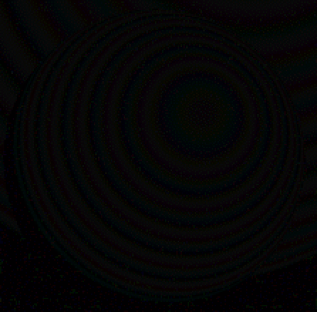

dimg: visual image difference utility
visualizing differences betweeen images
What
Usefully display differences between similar image pairs:

ball.png
|

ballsp4a.png
|
magick composite ball.png ballsp4a.png
-compose difference diff.png

diff.png
|
magick ball.png ballsp4a.png -compose Mathematics
-define compose:args='0,1,-1,.5' -composite dimg.png
dimg.png
|
Several image utilities, including
ImageMagick,
offer an image difference generation option,
with smaller difference nearer black (e.g. diff.png)
and all differences absolute, e.g.: red-green == green-red.
However, displayed differences are more visible near middle gray (e.g. dimg.png).
ImageMagick's
User Defined Mathematical Compose Method supports this more useful alternative.
Differences would ideally be calculated in a more nearly perceptual color space,
e.g. CIELab.
dimg.bat:
@echo off
: generate a difference image (third argument) from (first 2 argument) images
echo magick %1 %2 -compose Mathematics -define compose:args="0,-1,1,.5" -composite %3
magick %1 %2 -compose Mathematics -define compose:args="0,-1,1,.5" -composite %3